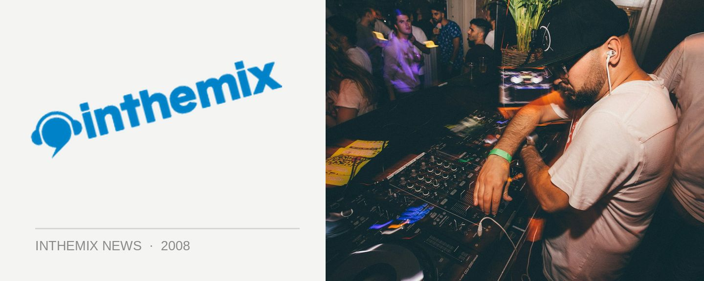

ITM's Top 20 Releases of 2008!
What music rocked your world this year? We’ve reached the closing days of 2008, and here at ITM we thought it was the perfect time to reflect on some of the finest music releases to hit the record shelves and download charts, and highlight which artist albums and compilations really shook things up and made a massive impact.
2008 will be remembered as the year that the indie/electro sound really took hold, with Australians proving to be pretty damn good at it with the success of acts like Cut Copy and The Presets. Looking to the wider dance scene, it was also this tendency to ‘crossover’ that really defined the last 12 months. Whether you’re talking about trance, techno, breaks or progressive, the genre boundaries were broken down and all the different scenes got cosy with each other. This made 2008 an exciting and inspiring time to be a dance music fan, and this was reflected in the quality of the releases that saw the light of day.
The team at ITM have put their heads together, and drawn up a list of what we reckon are the Top 20 Releases of 2008! So what took home the award for the top release of they year? Click below to find out…
ITM’s Top 20 Releases of 2008!